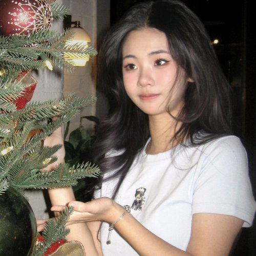

I make things about the space between — between what's seen and unseen, between feeling and understanding, between where I've been and where I'm going.
Born in China, raised across continents, currently based between New York and wherever curiosity takes me next. I study Psychology and Art at the University of Rochester, drawn to the places where these two ways of seeing the world overlap.
My work moves between painting, film, photography, and collage — whatever form lets the idea breathe. I'm interested in emotional narrative, the kind of beauty that hides in overlooked corners, and the strange intimacy of human-AI connection. My short film After You received an Honorable Mention at the 2026 Gollin Film Festival.
I believe the most honest art comes from paying attention. Not to what's loud, but to what stays.